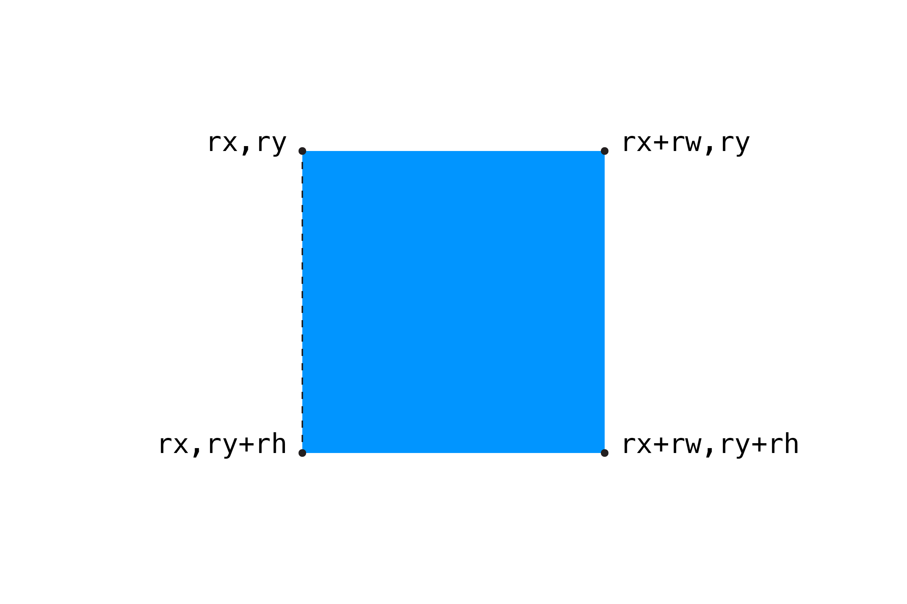

Перевіряти зіткнення з круглими об’єктами досить легко, оскільки відстань від їх центру до їх краю однакова в усіх напрямках. Для прямокутників потрібен трохи складніший алгоритм.
Скажімо, у нас є квадрат:
const rectX = 10; // x-позиція
const rectY = 10; // y-позиція
const rectW = 30; // ширина
const rectH = 30; // висота
Щоб побачити, чи знаходиться точка всередині квадрата, ми повинні перевірити наступні умови:
Чи X-координата точки розташована ПРАВОРУЧ від ЛІВОГО КРАЮ прямокутника?
Чи X-координата точки розташована ЛІВОРУЧ від ПРАВОГО КРАЮ прямокутника?
Чи Y-координата точки розташована НИЖЧЕ ВЕРХНЬОГО КРАЮ прямокутника?
Чи Y-координата точки розташована ВИЩЕ НИЖНЬОГО КРАЮ прямокутника?
Якщо усі ці умови правдиві одночасно, тоді точка знаходиться всередині прямокутника. Давайте спочатку перевіримо умову щодо лівого краю. Оскільки малювання прямокутника для функції rect() за замовчуванням починається з верхнього лівого кута, тоді значення його лівої координати знаходиться у змінній rectX:
if (pointX >= rectX) {
// точка знаходиться праворуч від лівого краю прямокутника
}
Досить легко, але, можливо, не так інтуїтивно зрозуміло. Ось діаграма, яка пунктирною лінією показує лівий край прямокутника:

Якщо ми хочемо перевірити умову для правого краю, нам потрібно отримати його X-позицію, яка є сумою лівої координати прямокутника і його ширини:
const rightEdge = rectX + rectW;
if (pointX <= rightEdge) {
// точка заходиться ліворуч від правого краю прямокутника
}
Ось повний код для перевірки всіх умов:
if (
px >= rx // точка правіше лівої сторони прямокутника
&& px <= rx + rw // І РАЗОМ З ТИМ точка лівіше правої сторони прямокутника
&& py >= ry // І РАЗОМ З ТИМ точка вище нижньої сторони прямокутника
&& py <= ry + rh // І РАЗОМ З ТИМ точка нижче верхньої сторони прямокутника
) {
return true;
}
return false;
Якщо всі твердження правдиві, тоді точка знаходиться всередині квадрата. Зауважте, що ми рознесли наш оператор if на кілька рядків, що полегшує його читання. Це залежить від особистих уподобань і для ясності ми продовжимо робити це.
Ось повний код прикладу:
// змінні для положення точки, які контролюватимуться положенням курсора
let px = 0;
let py = 0;
// координати для квадрату
let sx = 200;
let sy = 100;
// змінні для ширини й висоти квадрата
let sw = 200;
let sh = 200;
function setup() {
createCanvas(window.innerWidth, window.innerHeight);
noCursor();
strokeWeight(15); // збільшена жирність точки, щоб краще її бачити
// визначення положення координат для лівого верхнього кута, так щоб квадрат був по центру полотна
sx = (width - sw) / 2;
sy = (height - sw) / 2;
}
function draw() {
background(255);
// оновлення координат точки координатами курсора
px = mouseX;
py = mouseY;
// результат перевірки на зіткнення
const isHit = isPointWithRectCollides(px, py, sx, sy, sw, sh);
// зміна заливки при зіткненні
if (isHit) {
fill(255, 150, 0);
} else {
fill(0, 150, 255);
}
// малювання прямокутника
noStroke();
rect(sx, sy, sw, sh);
// малювання точки
stroke(0);
point(px, py);
}
// перевірка на перетин між точкою та прямокутником
function isPointWithRectCollides(px, py, rx, ry, rw, rh) {
// чи точка знаходиться всередині прямокутника?
if (
px >= rx // точка правіше лівої сторони прямокутника
&& px <= rx + rw // І РАЗОМ З ТИМ точка лівіше правої сторони прямокутника
&& py >= ry // І РАЗОМ З ТИМ точка вище нижньої сторони прямокутника
&& py <= ry + rh // І РАЗОМ З ТИМ точка нижче верхньої сторони прямокутника
) {
return true;
}
return false;
}
Далі: прямокутник і прямокутник